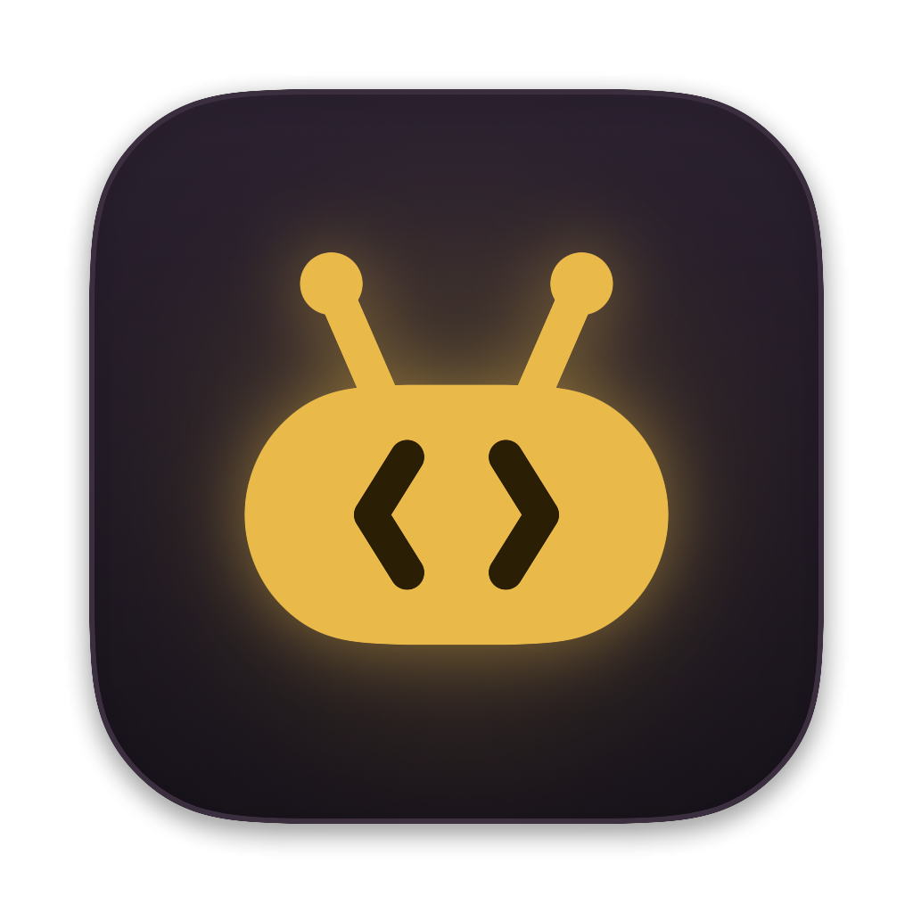

ShuttleФайлы между Mac, Android и Switch — перетаскиванием
Подключите кабель и тащите файлы туда-обратно. Фото с камеры, игры и homebrew для Switch, сейвы, синхронизация папок — в одном аккуратном окне.
Бесплатно · macOS 14+ · Apple Silicon и Intel · обновляется само

Просто работает
Без отладки, без настроек, без Android File Transfer.
ПеретаскиваниеМежду панелями, из Finder и обратно в Finder. Файлы можно бросить прямо на папку.
Продолжение после обрываКабель отошёл — Shuttle дождётся устройства и докачает с того же места.
Быстрый просмотрПробел — и файл с устройства открывается, как в Finder.
Поиск и избранноеИщите по всем папкам, закрепляйте нужные звёздочкой.
Пакетное переименованиеШаблон с датой и номером: «2026-11-07 Отпуск 01».
История и уведомленияЧто, куда и когда копировалось. Баннер, когда всё готово.
Фото — за одну кнопку
Shuttle помнит, что уже скачано, и предлагает только новое.
«Новые фото»Снимки камеры, которых ещё нет на Mac. HEIC сразу в JPG, если хотите.
Синхронизация папок«Камера → ~/Pictures» — только новое, ничего не удаляется. Можно автоматически при подключении.
Превью и дублиМиниатюры, сетка с фото и пометка «уже на Mac».
ADB по желаниюБыстрее, по Wi‑Fi, установка APK и снимок экрана телефона.
Для Switch с DBI
Все разделы DBI — вкладками. Игры, homebrew и сейвы — без ручной раскладки.
Установка игрБросьте .nsp/.nsz/.xci — Shuttle передаст их в DBI на SD или NAND и проверит место.
Homebrew из архива.zip раскладывается по папкам SD-карты: atmosphere, switch, оверлеи.
Сейвы на MacОдна кнопка — все сохранения в папку с датой.
Обновление AtmosphèreСкачает свежую версию с GitHub и сделает копию старой.
АльбомСкриншоты и ролики сеткой, выгрузка в «Фото».
Понятные имена«Mario Kart 8 Deluxe», а не 0100152000022000.
Как начать
Минута — и готово.
- Скачайте DMG и перетащите Shuttle в «Программы».
- Android: кабель → уведомление USB → «Передача файлов». Switch: DBI → «Run MTP responder».
- Тащите файлы. Новые версии Shuttle придут сами.